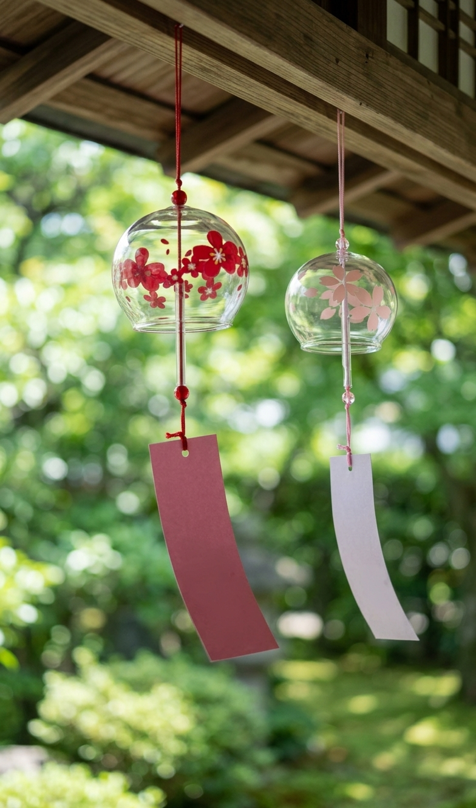

A set of two glass furin wind chimes with delicate cherry blossom designs and paper tanzaku strips, made for a breezy porch, window, or balcony.

In Japan, the light ring of glass on a breeze is a classic way to feel cooler on a hot day.
Delicate flower designs make each glass bell a small piece of art, even when the wind is still.
Hang them together or give one as a gift. Each comes with a paper strip that catches the breeze.
Furin have hung from Japanese eaves for centuries. The thin paper strip catches even a light breeze and makes the glass ring softly.
Hang them near a window, on a balcony, or under a porch roof for a calm, seasonal touch.
Catch the breeze from an open window.
A soft sound for outdoor evenings.
A light, seasonal present that is easy to send.
Yes, it is thin glass, so hang it where it will not knock against hard surfaces in strong wind.
No, the sound is soft and light, not a deep loud chime.
Under a covered area is best to protect the glass and paper strips.
A pair of glass furin wind chimes - see current pricing and availability on Amazon.
Check Price on Amazon →